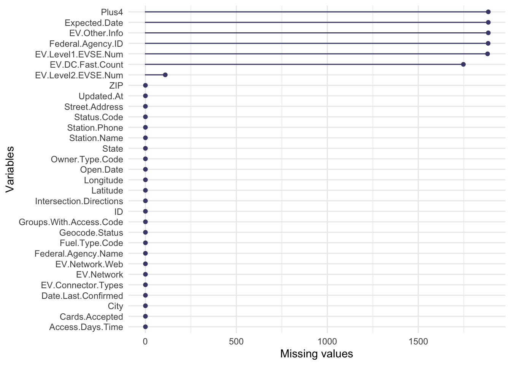
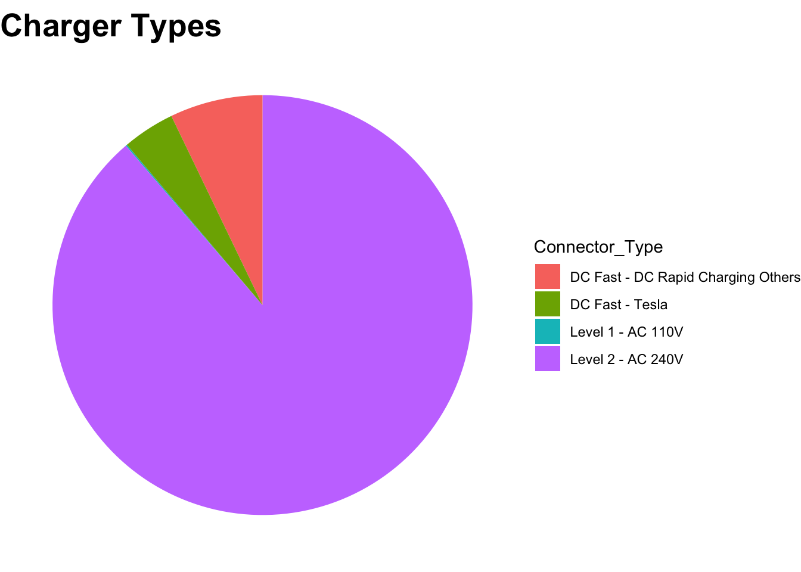

Chapter 4 Missing values
Graph missing values by variable

Graph missing values by variable, facet on the month of information updating time
The graph only plots variables that have a large proportion of missing values.

Given the proportion of data by information updating month, the number of missing values is proportional to the total number of entries for each month.
## # A tibble: 10 x 2
## Updated.month Prop
## <dbl> <dbl>
## 1 2 0.00108
## 2 3 0.0317
## 3 4 0.0753
## 4 5 0.00699
## 5 6 0.0656
## 6 7 0.00215
## 7 8 0.0280
## 8 9 0.0301
## 9 10 0.0134
## 10 11 0.746We conclude that there is no pattern for the input of missing values.
However, since some of the missing values are not captured in the above graph, we also try using the visna graph to plot the missing values by variable, and sort by variable with the most to least missing values.
## NOTE: In the following pairs of variables, the missingness pattern of the second is a subset of the first.
## Please verify whether they are in fact logically distinct variables.
## [,1] [,2]
## [1,] "Intersection.Directions" "Access.Days.Time"
## [2,] "Plus4" "Station.Phone"
## [3,] "Plus4" "Access.Days.Time"
## [4,] "Plus4" "Cards.Accepted"
## [5,] "Plus4" "EV.Level1.EVSE.Num"
## [6,] "Plus4" "EV.Level2.EVSE.Num"
## [7,] "Plus4" "EV.DC.Fast.Count"
## [8,] "Plus4" "EV.Network.Web"
## [9,] "Plus4" "Date.Last.Confirmed"
## [10,] "Plus4" "Owner.Type.Code"
## [11,] "Plus4" "Federal.Agency.ID"
## [12,] "Plus4" "Federal.Agency.Name"
## [13,] "Plus4" "Open.Date"
## [14,] "Expected.Date" "Access.Days.Time"
## [15,] "Expected.Date" "Cards.Accepted"
## [16,] "Expected.Date" "EV.Level1.EVSE.Num"
## [17,] "Expected.Date" "EV.Level2.EVSE.Num"
## [18,] "Expected.Date" "EV.DC.Fast.Count"
## [19,] "Expected.Date" "EV.Network.Web"
## [20,] "Expected.Date" "Date.Last.Confirmed"
## [21,] "Expected.Date" "Owner.Type.Code"
## [22,] "Expected.Date" "Federal.Agency.ID"
## [23,] "Expected.Date" "Federal.Agency.Name"
## [24,] "Expected.Date" "Open.Date"
## [25,] "Cards.Accepted" "Owner.Type.Code"
## [26,] "Cards.Accepted" "Open.Date"
## [27,] "EV.Level1.EVSE.Num" "Date.Last.Confirmed"
## [28,] "EV.Other.Info" "EV.Network.Web"
## [29,] "EV.Other.Info" "Date.Last.Confirmed"
## [30,] "EV.Other.Info" "Owner.Type.Code"
## [31,] "EV.Other.Info" "Federal.Agency.ID"
## [32,] "EV.Other.Info" "Federal.Agency.Name"
## [33,] "EV.Other.Info" "Open.Date"
## [34,] "Owner.Type.Code" "Open.Date"
## [35,] "Federal.Agency.ID" "Open.Date"
## [36,] "Federal.Agency.Name" "Open.Date"TRUE
From the graph, it does not seem to have obvious patterns in the missing values. So we directly drop the columns that contains only NA values, such as Plus4 and Expected Date.